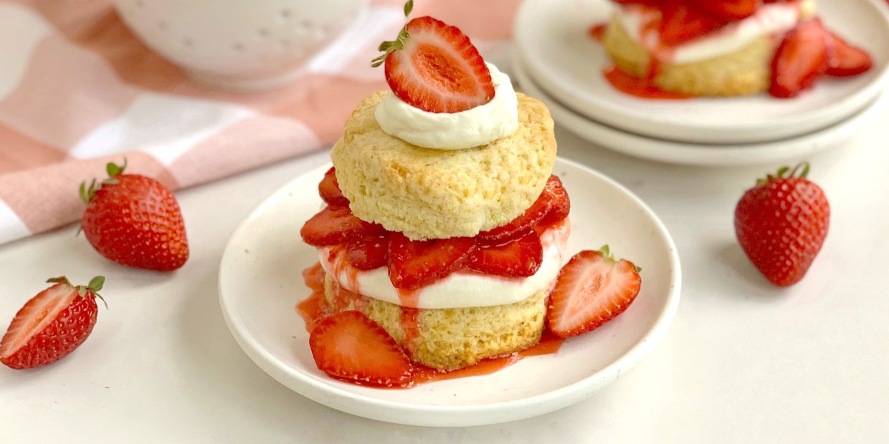

Resep Strawberry Shortcake

Kue lembut dengan lapisan krim dan stroberi segar, cocok untuk segala suasana.
Bahan-bahan:
- 200 gram tepung terigu
- 150 gram gula pasir
- 3 butir telur
- 100 ml susu cair
- 100 gram mentega cair
- 1 sdt baking powder
- Stroberi segar dan krim kocok untuk hiasan
Cara Membuat:
- Kocok telur dan gula hingga mengembang dan berwarna pucat.
- Masukkan tepung terigu dan baking powder secara bertahap sambil diayak.
- Tambahkan susu cair dan mentega cair, aduk hingga rata.
- Tuang adonan ke dalam loyang yang sudah dialasi kertas roti.
- Panggang di oven 180°C selama 25-30 menit.
- Setelah dingin, lapisi dengan krim dan stroberi. Sajikan.